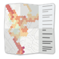

Noise MapsThis map is feeded in realtime by the raw data collected using the NoiseCapture mobile application. There is no filtering or processing of the data. It shows a noise map that is built using an agregation of all raw data, and allows to explore the noise environment everywhere in the world, from the NoiseCapture users community.
The "NoiseCapture Party" listed below are supported by the NoiseCapture team. For each of them, you can access to an interactive dedicated map.
To know more about this kind of event, please consult this page.
| Name | Where | When | Map code | Link |
|---|---|---|---|---|
| Cartographie bruit École ESH, juin 2026 | - Montreal | 2026/06/22 | ESHE2026 | See the map |
| Cartographie du bruit dans le Vieux-Québec et la colline Parlementaire | - Québec | 2026/06/01 | VilleDeQuebec_CartoBruit2026 | See the map |
| CoolPath 2026 | - Nantes | 2026/05/17 | CPATH26 | See the map |
| Le bruit, est-ce un choix de vie ? | - Saint-Sébastien | 2026/04/27 | Joliverie2026 | See the map |
| One Health Summit Lyon | - Lyon | 2026/04/04 | Acoucite_OHS_2026 | See the map |
| Cartographie bruit École Dalbé-Viau, jour 4 | - Montréal | 2026/03/23 | ETSH2026_DalbeViau_Jour4 | See the map |
| À l’écoute de Grand Lac | - Aix-les-Bains | 2026/03/07 | CA-Grand-Lac | See the map |
| Mesures sonores à Villejuif pour une Ferme Urbaine inclusive | - Villejuif | 2026/02/19 | Villejuif_fermeurbaine | See the map |
| University of Salerno 2025 | - Salerno | 2025/11/01 | UNISA2025_11 | See the map |
| Marche sensorielle Campus Pierre et Marie Curie | - Paris | 2025/10/01 | Autisencite_sorbonne | See the map |
| Marche sensorielle Mont-de-Marsan | - Mont-de-Marsan | 2025/10/01 | Autisencite_montdemarsan | See the map |
| Marche sensorielle Biscarrosse | - Biscarosse | 2025/10/01 | Autisencite_biscarrosse | See the map |
| Noise Party Lille 2025 | - Lille | 2025/05/17 | NPLille2025 | See the map |
| Málaga Centro Día del Ruido 2025 | - Málaga | 2025/04/25 | MLGDIARUIDO2025 | See the map |
| Cartographier le bruit portuaire à l’Anse Aux Foulons | - Québec | 2025/04/25 | BAAF2025 | See the map |
| Mesures acoustiques dans le cadre du projet TRAPCo | - Bron | 2025/04/25 | TRAPCo_24-25 | See the map |
| Cartographie bruit École Baril | - Montréal | 2025/03/17 | ETSH2025_Baril | See the map |
| Cartographie bruit École Sainte-Bernadette-Soubirous | - Montréal | 2025/03/10 | ETSH2025_SainteBernadetteSoubirous | See the map |
| Marche sensorielle UPEC | - Créteil | 2025/02/28 | Autisencite_upec | See the map |
| Marche sensorielle IME Arpège | - Ivry-sur-Seine | 2025/02/28 | Autisencite_imearpege | See the map |
| Marche sensorielle FAM Diapason | - Grandchamps | 2025/02/28 | Autisencite_FAM | See the map |
| Marche sensorielle IME Cours de Venise | - Paris | 2025/02/28 | Autisencite_CDVenise | See the map |
| NoiseCapture Party 2025 @UA | - Aveiro | 2025/02/26 | UnivAveiro2025 | See the map |
| Cartographie bruit École Sainte-Catherine-de-Sienne | - Montréal | 2025/02/24 | ETSH2025_SaintCatherineDeSienne | See the map |
| Marche sensorielle SESSAD Grange-Ory | - Cachan | 2025/02/20 | Autisencite_ sessadgrangeory | See the map |
| AutiSenCité Ivry-sur-Seine | - Ivry-sur-Seine | 2025/01/29 | Campus_Urbain_2025 | See the map |
| Cartographie bruit Notre-Dame-du-Foyer | - Montréal | 2024/11/06 | ETSA2024_NotreDameduFoyer | See the map |
| University of Salerno 2024 | - Salerno | 2024/11/04 | UNISA2024_11 | See the map |
| Cartographie bruit Saints-Martyrs-Canadiens | - Montréal | 2024/10/28 | ETSA2024_SaintsMartyrsCanadiens | See the map |
| Cartographie bruit École Saint-Étienne | - Montréal | 2024/10/23 | ETSA2024_SaintEtienne | See the map |
| Coloquio Internacional Paisaje Sonoro CDMX | - Mexico | 2024/10/16 | PSJUAM24 | See the map |
| BROUHAHA - IdF | - Paris | 2024/10/01 | BROUHAHA2025_IdF | See the map |
| BROUHAHA - AuRA | - Lyon | 2024/10/01 | BROUHAHA2025_AuRA | See the map |
| NoiseCapture Party Lille | - Lille | 2024/04/15 | LILLE2024 | See the map |
| Urban Cycling Living Lab Ljubljana | - Ljubljana | 2024/04/01 | UKLL2024 | See the map |
| Cartographie du bruit au Campus ÉTS pendant la période calme - 2024 | - Montréal | 2024/02/20 | ETSH2024_heurecalme | See the map |
| Cartographie du bruit au Campus ÉTS pendant la période de pointe - 2024 | - Montréal | 2024/02/20 | ETSH2024_HeurePointe | See the map |
| Le Mans Sonore - 2024 | - Le Mans | 2024/01/19 | LMS2024 | See the map |
| University of São Paulo 2023 | - São Paulo | 2023/12/03 | SAOPAULO23 | See the map |
| NoiseCapture Party 2023 @UA | - Aveiro | 2023/11/22 | UnivAveiro2023 | See the map |
| ENSA Sound Environmental Study | - Nantes | 2023/11/07 | VAU_ENSA_23 | See the map |
| University of Salerno 2023 | - Salerno | 2023/10/25 | UNISA2023_10 | See the map |
| Cartographie de bruit sur le campus principal de l’université de Sherbrooke | - Sherbrooke | 2023/10/01 | GMC2023 | See the map |
| Acoustics Week in Canada 2023 - Noise Mapping activity | - Montréal | 2023/10/01 | AWC23 | See the map |
| SUPERBLOCK Infotag | - Stuttgart | 2023/09/12 | SUPERBLOCKINFO | See the map |
| Silence et Obscurité | - Sherbrooke | 2023/09/01 | SETO | See the map |
| FUTURE Days - Nantes 2023 | - Nantes | 2023/04/11 | FUTUREDays2023 | See the map |
| BUT Science des données - IUT Vannes | - Vannes | 2023/03/19 | IUTVannes2023 | See the map |
| Cartographie du bruit au Campus ÉTS pendant la période calme | - Montréal | 2023/02/21 | ETSH2023_HeureCalme | See the map |
| Cartographie du bruit au Campus ÉTS pendant la période d’heure de pointe | - Montréal | 2023/02/21 | ETSH2023_HeurePointe | See the map |
| NoiseCapture Party 2022 @UA | - Aveiro | 2022/12/14 | UnivAveiro2022 | See the map |
| NoiseCapture à UdeS | - Sherbrooke | 2022/11/13 | UdeSBruit2022 | See the map |
| University of Salerno 2022 | - Salerno | 2022/11/08 | UNISA2022_11 | See the map |
| NoiseCapture at Santiago | - Santiago | 2022/10/25 | SantiagoNoise2022 | See the map |
| Les paysages sonores de Paris Centre | - Paris | 2022/07/10 | HBM2022 | See the map |
| University of Salerno 2022 | - Salerno | 2022/05/15 | UNISA2022 | See the map |
| Immersion Sciences 2022 | - Île-Tudy | 2022/03/27 | IMS2022 | See the map |
| NoiseCapture Party JNA 2022 | 2022/02/27 | JNA2022 | See the map | |
| Wallonie - Namur - Party pédagogique 2022 | - Namur | 2021/12/09 | WAL_NAM_PEDA_2022 | See the map |
| Wallonie - Namur - Party citoyenne 2022 | - Namur | 2021/12/09 | WAL_NAM_CIT_2022 | See the map |
| Acoustics Week in Canada 2021 | - Montréal | 2021/07/23 | NoiseCANADA21 | See the map |
| Contaminación acústica da Universidade da Coruña | - La Coruña | 2021/03/01 | UDC_2021 | See the map |
| CitieS-Health Ljubljana | - Ljubljana | 2020/10/01 | LJUBLJANA_2020 | See the map |
| Universidade da Coruña - COVID lockdown | - La Coruña | 2020/05/04 | UDC_COVID_2020 | See the map |
| NoiseCapture Campus Quito | - Quito | 2020/04/21 | CICAM_EPN2020 | See the map |
| Contaminación acústica da Universidade da Coruña | - La Coruña | 2020/03/01 | UDC_2020 | See the map |
| Stras' NoiseCaptureParty | - Strasbourg | 2020/01/22 | MSA2020 | See the map |
| Festival Pop'Sciences | - Lyon | 2019/05/17-18 | FPSLYO2019 | See the map |
| Setmana Sense Soroll | - Catalunya | 2019/05/05 | SSSOROLL2019 | See the map |
| Immersion Sciences 2019 | - Île Tudy | 2019/03/28 | IMS2019 | See the map |
| L1 géographie et aménagement | - Nantes | 2019/03/12-15 | GEO2019 | See the map |
| Maison pour la Science en Alsace | - Strasbourg | 2019/01/09-11 | MSA2019 | See the map |
| Contaminación acústica da Universidade da Coruña | - La Coruña | 2019/02-04/24 | UDC_2019 | See the map |
| H2020 Monica - Fête des Lumières | - Lyon | 2018/12/06-08 | H2020Monica_Lyon2018 | See the map |
| L1 géographie et aménagement | - Nantes | 2019/03/12-15 | GEO2019 | See the map |
| Maison pour la Science en Alsace | - Strasbourg | 2019/01/09-11 | MSA2019 | See the map |
| Contaminación acústica da Universidade da Coruña | - La Coruña | 2019/02-04/24 | UDC_2019 | See the map |
| Fête de la Science 2018 - Nantes | - Nantes | 2018/10/12-14 | FDSNTS2018 | See the map |
| Fête de la Science 2018 - Strasbourg | - Strasbourg | 2018/10/12-14 | FDSSTRAS2018 | See the map |
| Agglo Bastia - NoiseCapture party | - Bastia | 2018/10/05 | AGGLOBASTIA2018 | See the map |
| NoiseParty - Plougoumelen | - Plougoumelen | 2018/07/18 | PNRGM_Plougoumelen | See the map |
| Amsterdam Sounds: noise in the city | - Amsterdam | 2018/06/20 | AMSOUNDS | See the map |
| FestNoise - Elven | - Elven | 2018/06/08 | PNRGM_Elven | See the map |
| University of Salerno | - Salerno | 2018/05/03 | UNISA | See the map |
| Universidade da Coruña | - La Coruña | 2018/04/17 | UDC | See the map |
| Immersion Science 2018 | - Île Tudy | 2018/03/28 | IMS2018 | See the map |
| Fête de la Science 2017 | - Nantes | 2017/10/13-15 | FDS2017 | See the map |
| ANQES 2017 | - Paris | 2017/11/27-29 | ANQES2017 | See the map |
| Digital Week Pornichet | - Pornichet | 2017/09/20 | SNDIGITALWEEK | See the map |